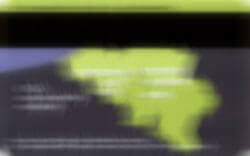
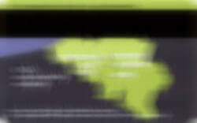

Le Service Desk est un point de contact unique pour toutes les demandes de nature informatique à l’UCL. Un call center orientera l'utilisateur vers le bon interlocuteur.
Il aide tout nouveau membre de l'UCL à résoudre les problèmes liés à son identité : carte d'accès, identifiant global, mot de passe. Il reçoit aussi les demandes liées aux services IT (courrier électronique, agenda, WiFi, portail, etc.)
Le Service Desk est accessible :
- par téléphone, de 8h30 à 17h30 tous les jours ouvrables sans interruption au n° d'appel : 010/47.8282
- via l'adresse mail 8282@UCLouvain.be
La smartcard permet l'accès aux bibliothèques et l'emprunt de livres, l'accès aux salles didactiques, aux bâtiments protégés, aux parkings, etc.
Le recto met en avant les éléments liés à l'identité de la personne: prénom et nom, photo d'identité, n° de la carte et n° FGS.
Le verso équipé d'une piste magnétique, met en avant l'aspect "multisite" de l'Université.
La carte dispose également une fonctionnalité "sans-contact".
 

Le délai "normal" pour recevoir la carte est de 15 ouvrables si vous avez renvoyé une photo correspondant aux spécifications requises avec le formulaire.
Si la carte n'est pas en votre possession après 15 jours ouvrables :
- Si vous êtes membre du personnel, veuillez prendre contact avec le .
- Si vous êtes étudiant, veuillez prendre contact avec le .
- Si vous êtes lecteur des bibliothèques, veuillez prendre contact avec la bibliothèque dans laquelle vous vous êtes inscrits.
La première carte de l'UCL est automatiquement activée. Si vous aviez déjà une carte magnétique en cours de validité, la nouvelle carte sera automatiquement activée 7 jours après la date d'envoi. L'ancienne carte sera désactivée pour vous permettre d'utiliser la nouvelle. Si vous souhaitez activer cette carte plus tôt , suivez les instructions sur la page : .
L'UCL offre un accès homogène au réseau sans fil (WiFi) en utilisant des technologies avancées en matière de sécurité et d'identification.
4 réseaux disponibles
- UCLouvain ► pour le personnel UCL
- eduroam ► pour les étudiants et personnel UCL et pour les visiteurs 'membre eduroam'
- visiteurs.UCLouvain ► pour les autres visiteurs ou congressistes UCL
- UCLouvain-prive ► pour un accès limité aux pages web UCL
Eduroam
L'UCL est partenaire du projet eduroam. Les visiteurs de toutes les universités partenaires bénéficient d'un accès au WiFi avec les logins et mot de passe de leur université d'origine. Plus d’infos sur
Se connecter
Il est indispensable de connaître son identifiant global et le mot de passe associé :
- pour les étudiants UCL : réseau 'eduroam' → login : votre_identifiant_global@wifi.uclouvain.be
- pour les visiteurs membres eduroam : réseau 'eduroam' → identifiant de l'université d'origine
- pour un visiteur : réseau 'visiteurs.UCLouvain' → login : login temporaire reçu
- pour les congressistes : réseau 'visiteurs.UCLouvain' → login : login temporaire reçu
- pour un accès limité aux pages web UCL : réseau 'UCLouvain-prive' → pas de login
Des guides de configuration rapides (pdf) reprennent les caractéristiques des configurations du WiFi pour les systèmes Windows et Mac.
- SSID : visiteurs.UCLouvain (pour visiteurs, congressistes et conférenciers)
- SSID : eduroam (pour étudiants, membres du personnel et membres des institutions participant à Eduroam)
Des guides plus complets d'aide à la configuration du WiFi sont disponibles ici pour les systèmes suivants :
- Windows Vista ()
- Windows 7 : Windows 7 () et une alternative ()
- Windows 8 ()
- Installer un certificat numérique (Windows) ()
- Mac OS X : Tiger & Panther (), Léopard () et une page en cas de difficultés d'approbation du certificat ()
- Linux : wpa_supplicant () et Ubuntu ()
- iPhone/iPad ()
- Androîd ()
Demande temporaire pour visiteurs et congressistes
Un accès temporaire au WiFi pour un visiteur ou pour des congressistes, etc. peut être demandé par un membre du personnel UCL. Consulter les pages du WiFi dans l'intranet - MyUCL après identification.
Couverture du service
Sur le campus UCL de Louvain-la-Neuve, le service WiFi couvre tous les auditoires, salles didactiques et bibliothèques, ainsi que les salles de réunions et autres locaux où les besoins de mobilité le justifient. Les modalités d'accès sont identiques quel que soit le bâtiment ou le secteur informatique où vous vous déplacez à Louvain-la-Neuve.
Sur le campus UCL de Woluwe, le service WiFi couvre l’ensemble des locaux UCL en ce compris les logements étudiant UCL.
Sur le campus UCL de Saint-Gilles et de Tournai, le service WiFi couvre l’ensemble des locaux académiques.
Sur le campus UCL de Mons, le service WiFi couvre l’ensemble des locaux UCL en ce compris les logements étudiant UCL.
Sur le campus UCL de Charleroi, le service WiFi couvre l’ensemble des locaux de cours situés à la rue Trieu Kaisin.